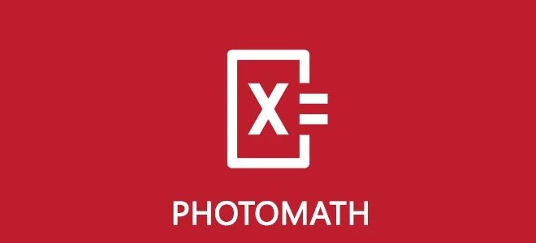

¿QUE ES PHOTOMATH?

Photomath es una aplicación de teléfono inteligente que permite a los usuarios escanear problemas matemáticos y obtener soluciones paso a paso en tiempo real. La aplicación utiliza tecnología de reconocimiento de caracteres para analizar los problemas matemáticos escritos a mano y ofrecer soluciones detalladas, junto con explicaciones y gráficos en caso de ser necesario. Photomath está diseñada para ayudar a los estudiantes a comprender mejor los conceptos matemáticos y a resolver problemas de manera más eficiente.
¿PARA QUIEN ESTA DISEÑADA?
Photomath está diseñada para ayudar a los estudiantes a comprender mejor los conceptos matemáticos y a resolver problemas de manera más eficiente. Es una aplicación que permite resolver problemas matemáticos utilizando la cámara o la pantalla del smartphone. Desde aritmética hasta cálculo, Photomath ayuda a interpretar problemas con contenido matemático integral.
FUNCIONES
Photomath es una aplicación de teléfono inteligente que te ayuda a resolver problemas matemáticos. Aquí tienes un resumen de cómo funciona:
-
Escanea el problema: Usas la cámara de tu teléfono para tomar una foto del problema matemático, ya sea en un libro de texto o escrito a mano.
-
Obtén la solución: La aplicación muestra la solución paso a paso, así puedes entender cómo llegar a la respuesta.
-
Calculadora científica: También puedes escribir y editar ecuaciones usando una calculadora científica incluida en la app.
-
Múltiples idiomas: Photomath está disponible en más de 30 idiomas.
-
Temas de matemáticas: Puedes resolver problemas de aritmética, álgebra, trigonometría, cálculo y estadística.
-
Es una herramienta muy útil para estudiantes y cualquier persona que quiera mejorar sus habilidades matemáticas.
¿QUIEN CREO PHOTOMATH?
Photomath fue creada por Microblink, una empresa croata con sede en Zagreb y oficinas en Londres. La aplicación fue lanzada en 2014.